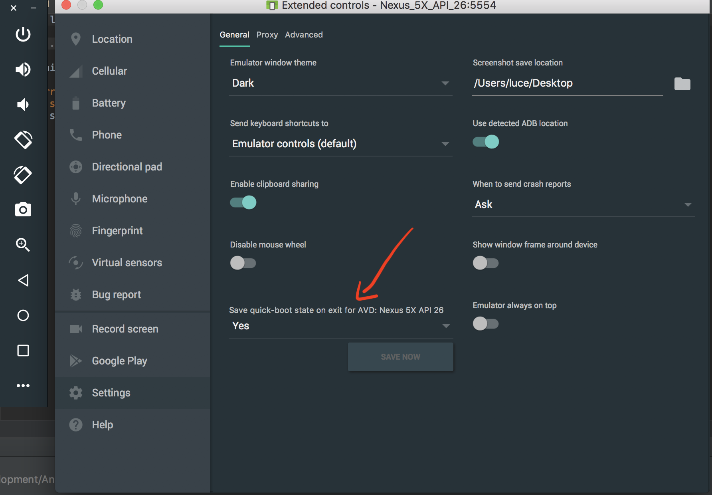
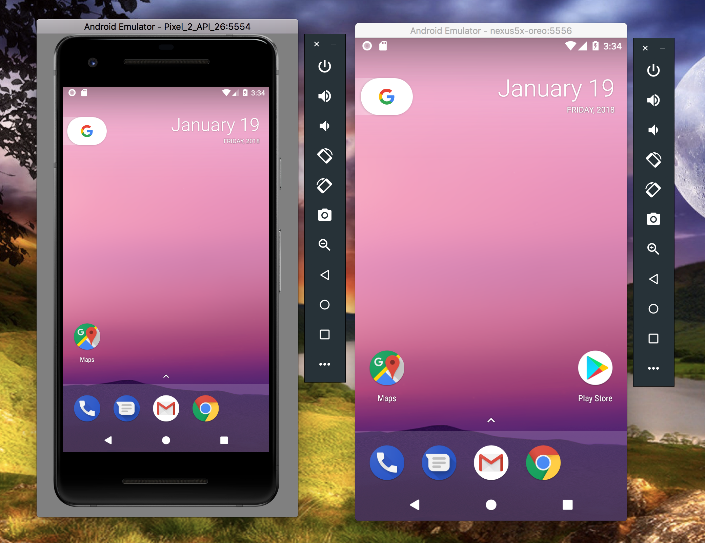

My experience of the new Xamarin Android Device Manager with Instant Boot feature
So The Xamarin Show released a new Snack Pack Edition yesterday, which can be found [here](So The Xamarin Show released a new Snack Pack Edition yesterday, which can be found here.).
In it, James does a quick introduction to the new Xamarin Android Device Manager teased recently in the Xamarin Podcast and online with the long awaited “Instant Boot” feature. Anyone that has tried to use Android emulators knows how slow they can be, especially if you have an AMD CPU and cannot benefit from HAXM Acceleration, so this is something the community has wanted for a long time. The idea is the phone boots at regular speed the first time it is booted but then takes a snapshot when closed and caches that so the next time the same emulator is booted, it knows where it was at before, including installed apps and any open apps. It means the boot time is reduced by at least half which is fantastic and a real time saver. With the introduction of the ability to use Xamarin Live Player in an emulator, into Visual Studio 2017 Preview 15.6 (and I imagine Visual Studio for Mac but cannot move my install off Stable for teamwork reasons, to confirm), the use of emulators over a physical Android device can only increase so the timing of this release is perfect. I was so excited about it I instantly downloaded it overnight and decided to give it a try. This blog will cover my first impressions of the new Android Device Manager so without further ado, let’s get started!
Wow this thing is fast!
As per the Xamarin Show episode linked at the start, I updated all my various SDK’s and tools as required as well as updating my emulators themselves then installed the new Xamarin Android Device Manager. The first thing that you need to note is that while it is in Preview, you cannot access this new AVD Manager from inside Visual Studio 2017 or Visual Studio for Mac as this still loads the old one. Instead you will need to open it as a standalone program. In my case as I did this on a Macbook Pro, I simply opened it from a Spotlight search. I decided to follow James’ example and add a new device by clicking the clearly visible button. I then selected Android 8.0 Oreo as my Android version of choice and the Nexus 5X. All the settings in the list can look a bit daunting but thankfully you can just leave the defaults as Xamarin have been kind enough to optimise these for you. One interesting thing I did observe though (although why you would ever turn it off I do not know) is that in the settings for the emulator, you can select to disable the Fast Boot feature.

Disable instant boot feature
In my last blog post I created a simple cross-platform iOS, Android and ASP.Net Xamarin Forms project using Ooui so I decided to try deploying that to my newly created AVD.
The first time I deployed to the phone it took a little while to get everything set up but I would say it was still noticeably faster than previously. I then deployed again to test the saved state. Bear in mind that if you leave the app open from your previous run and click the ‘x’ on the emulator to close it, that will be open as soon as the emulator starts again. So if it is booting again to deploy an update to your code, that app you see straight away isn’t the update. The app will close itself then reopen the updated version a few seconds later. I was curious to know if it was possible to use a device created in the new Xamarin Android Device Manager with native non Xamarin development so I booted up Android Studio and gave it a go with a brand new, blank “Hello World” type project.
The results were intriguing. It is able to see that I created a 5X emulator but when you click it and click OK to set it as the target device for deployment, nothing happens. So I created a new emulator inside Android Studio, this time a Google Pixel 2 emulator, and successfully deployed to it.
Interestingly, when created from Android Studio’s AVD Manager, the resulting emulator runs with a skin that makes it look like the actual phone. This is probably possible as a setting in the Xamarin one as well just couldn’t find it easily and it is what the cool kids would call a “first world problem”.

Pixel 2 emulator on the left and Nexus 5X emulator on the right
I then tried deploying to the same emulator from Visual Studio. It saw the device was running as it was bold in the devices list but was unable to connect to it to deploy the application. If I tried deploying to the previously create Xamarin Android Device Manager Nexus 5X it booted fine. So it is worth being aware what devices were created where if you also do Java/Kotlin native Android development as you may find you have issues deploying if you pick the wrong one. I know what you might be thinking “Why do native Android when I can do Xamarin.Android?” Well in my previous job as a developer, I had to create a native Android app written in Java due to time restraints and the use of a 3rd party library for using an NFC reader in specialist hardware. We eventually created bindings around the library so it had C#support for use in Xamarin (yup I wrote the whole app again in Xamarin Forms after this!) but at the time I just had to do Java native and I am sure I am not the only one who has faced similar. Overall I find the new Xamarin Android Device Manager excellent. The interface is clean and easy to use, the latest Android tools and emulator support means lightening fast boot times and it is easy to see and configure pre-existing emulators. I will be interested to see how well Xamarin created emulators and Android Studio created emulators play together in future as it comes out of Preview but as a Xamarin developer, I am absolutely thrilled so thank you to everyone at Xamarin for your hard work making this possible!